Formato: 12 testes de 0,5 ponto (6 pontos). Estude pelo livro Teias da História, os slides do Moodle, as anotações de aula e a apostila ESSIA.
Vídeos Revisão em mapas animados
Cap. 1 As Revoluções de 1830 e 1848
O ponto de partida
- Waterloo (1815) encerra o império de Napoleão e o ciclo revolucionário iniciado em 1789.
- O Congresso de Viena (1814–1815) reorganiza a Europa pela legitimidade monárquica e pelo equilíbrio de poder.
- Restauração e repressão: o Antigo Regime volta em parte, e ideias liberais e nacionalistas são perseguidas.
Luís XVIII (1814–1824)
- Volta dos Bourbons; governa como rei constitucional, tentando conciliar o legado napoleônico com a tradição monárquica.
- A Carta Constitucional de 1814 mantém alguns direitos civis da Revolução, mas preserva privilégios aristocráticos e o poder do rei.
- Pressão dos dois lados: liberais querem mais participação; ultrarrealistas querem mais absolutismo e punição aos revolucionários.
Carlos X (1824–1830): o endurecimento
Perfil absolutista: reforça privilégios da aristocracia, censura a imprensa e enfrenta oposição crescente. Em julho de 1830, as Ordenações de Julho dissolvem a Câmara, restringem ainda mais o voto e censuram a imprensa. É o estopim.
Os "Três Dias Gloriosos" (27 a 29 de julho de 1830)
- Barricadas e combate urbano nas ruas de Paris.
- Aliança entre operários, estudantes e burguesia contra o autoritarismo real.
- Carlos X abdica em favor do neto e foge; a Câmara ignora o gesto e chama Luís Filipe de Orléans.
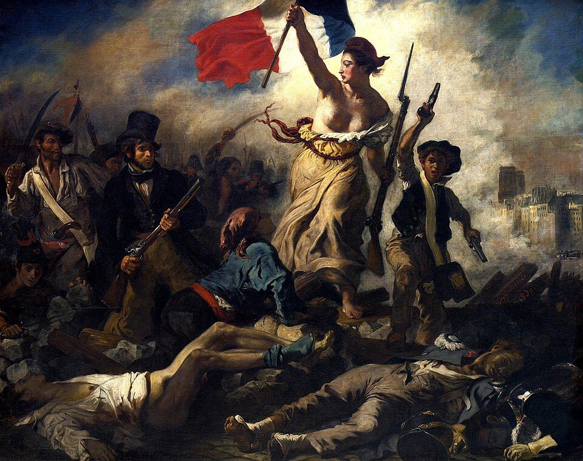
O efeito dominó de 1830
- Bélgica: se separa dos Países Baixos e vira monarquia liberal independente.
- Polônia: levante contra o domínio russo, esmagado em 1831.
- Itália (Modena, Bolonha): revoltas contra a influência austríaca, reprimidas.
A Monarquia de Julho (1830–1848)
- Luís Filipe, o "rei dos franceses" ou "rei burguês": monarca constitucional apoiado pela burguesia liberal.
- Crescimento econômico e expansão bancária, mas voto censitário: só cerca de 1% da população votava.
- Repressão a protestos e oposição crescente de republicanos, socialistas e legitimistas contra o "reino dos ricos".
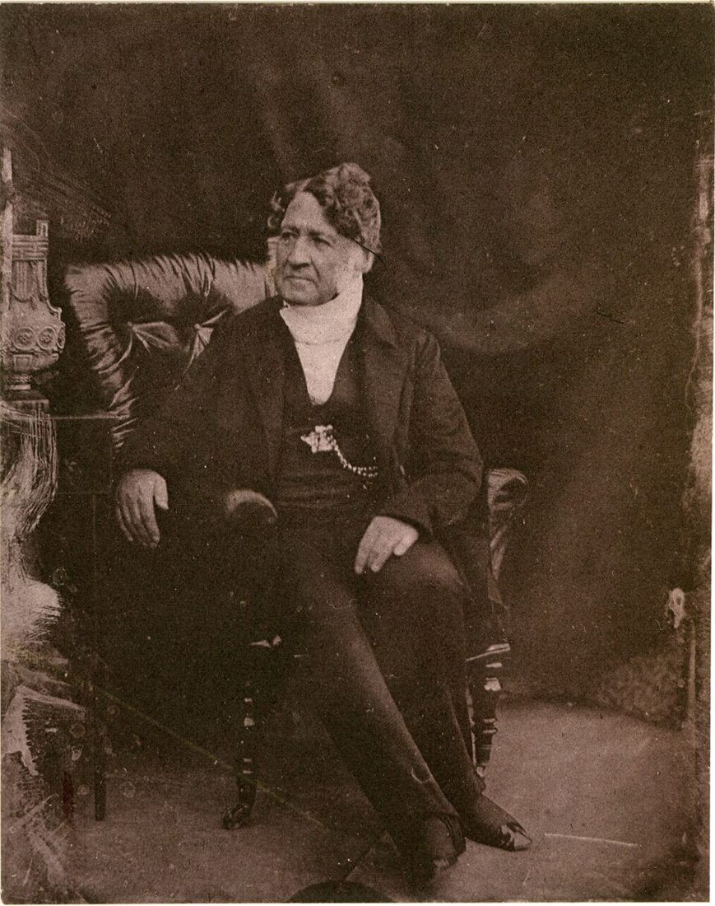
Causas
- Crise econômica: más colheitas, carestia, falência de oficinas, desemprego operário.
- Exclusão política: o sufrágio censitário barra os pobres e Luís Filipe recusa reformas.
- Velho × novo mundo social: estruturas do Antigo Regime (economia agrária, relações senhoriais, artesanato) convivem com o capitalismo industrial e o novo proletariado. Essa tensão gera conflitos de classe.
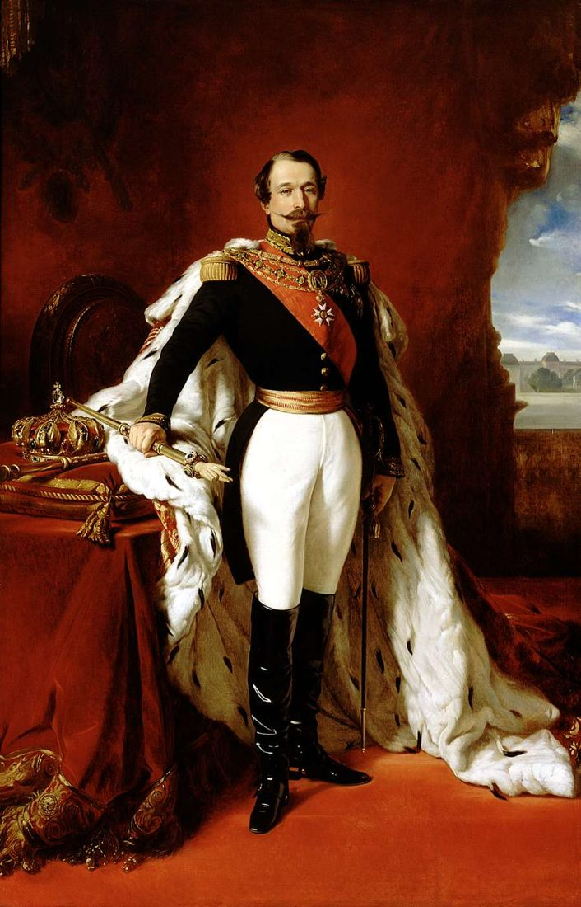
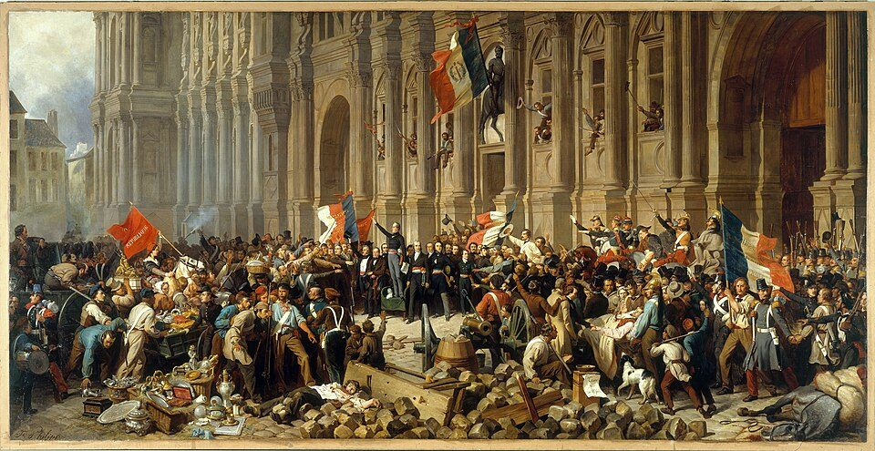
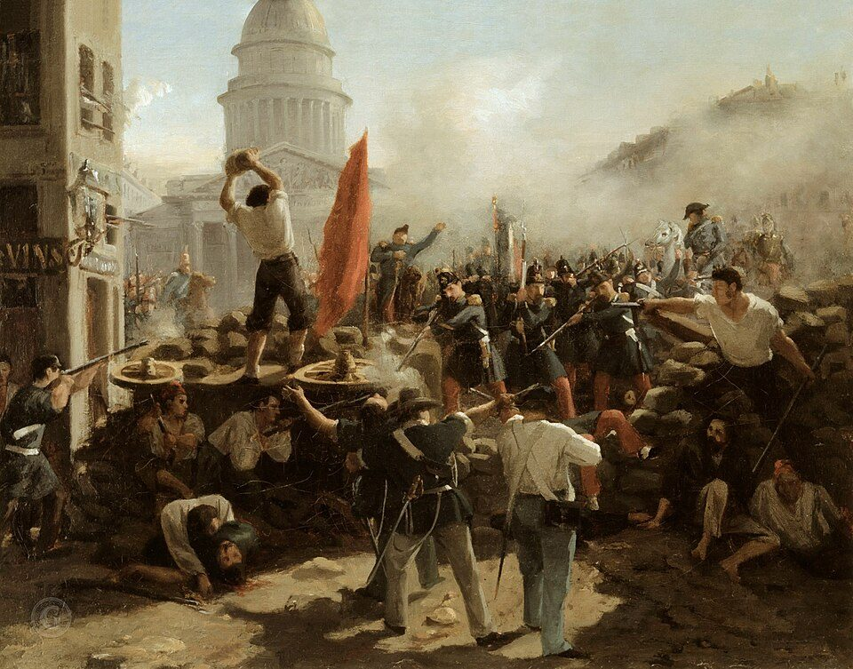
A Primavera dos Povos
- Revoltas quase simultâneas que pedem constituições (liberalismo), unificação ou independência nacional (nacionalismo) e melhores condições de vida (questão social).
- Itália, Alemanha e Império Austríaco: demandas por unificação, constituição e fim da dominação estrangeira.
- Quase todas são reprimidas pelos exércitos conservadores, mas espalham o nacionalismo que levará às unificações.
Cap. 2 Ideologias do Século XIX
Depois da Revolução Francesa e das independências na América, o liberalismo vira a base da nova ordem burguesa: propriedade privada, liberdades civis e igualdade jurídica.
| Liberalismo clássico (político) | Liberalismo econômico | |
|---|---|---|
| Política | Estado garante vida, liberdade e propriedade, sem interferir nas escolhas individuais. Constituição e divisão dos poderes. | Estado mínimo: só ordem, justiça e proteção à propriedade. |
| Economia | Livre iniciativa e concorrência; o mercado se autorregula. | Oferta e demanda sem o Estado; lucro e acumulação como motores do progresso. |
| Sociedade | Todos iguais perante a lei; ascensão pelo mérito. | Cada um é responsável pela própria ascensão; a pobreza seria incapacidade individual. |
| Mentalidades | Ser humano racional, que busca o próprio bem-estar. | A "mão invisível" do mercado transforma interesse individual em bem coletivo. |
- Política: Estados nacionais baseados na soberania popular; unificação ou independência de povos com identidade comum é um direito.
- Economia: economias autossuficientes, protecionismo e indústria nacional.
- Sociedade: a nação como comunidade de cultura, língua, história e tradições.
- Mentalidades: exaltação do passado heroico, bandeiras, hinos e heróis; emoção e pertencimento.
| Movimento | Quando | O que fazia |
|---|---|---|
| Ludismo | 1811–1816 | Operários ingleses destruíam máquinas, vistas como causa do desemprego e da exploração. Revolta contra a desumanização do trabalho industrial. |
| Trade Unions | legais desde 1824; fortes a partir de 1840 | Primeiras associações permanentes de trabalhadores: salários, condições de trabalho, greves, negociação e ajuda mútua. |
| Cartismo | 1838–1848 | Movimento político britânico: a Carta do Povo exigia sufrágio universal masculino e eleições justas. |
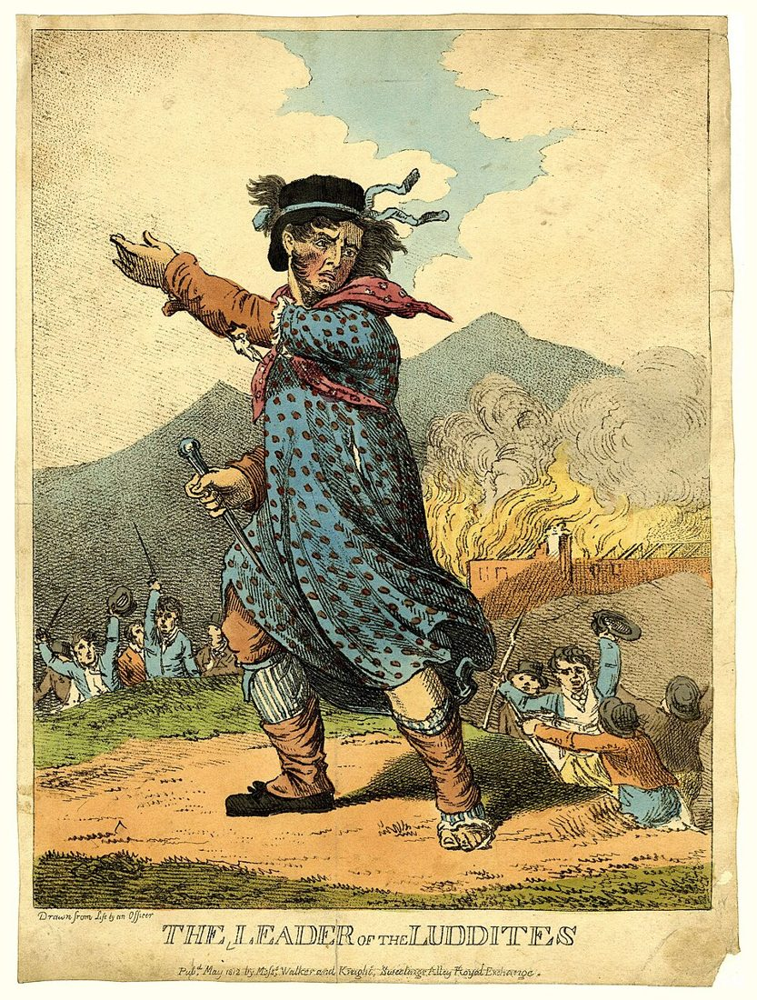
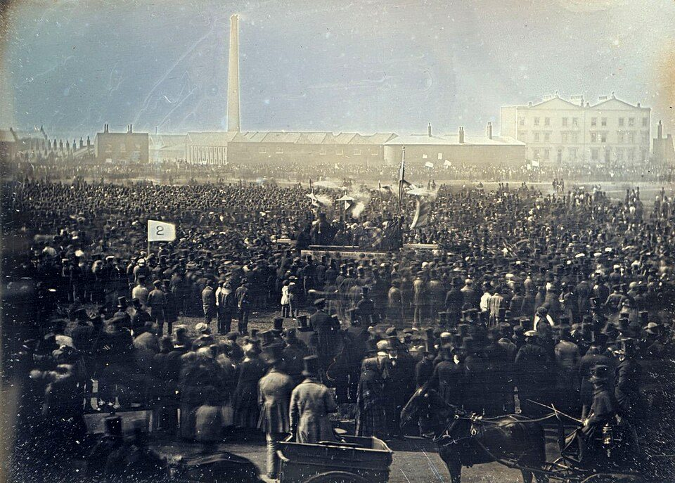
O que é capitalismo?
- Marx (O Capital, 1867): modo de produção que nasce da separação entre o trabalhador e os meios de produção; terra, trabalho e capital viram mercadorias.
- Fernand Braudel: o capitalismo não é o comércio em si, mas sua organização em larga escala por uma minoria que controla os circuitos financeiros e produtivos; no século XIX ganha feições industriais, bancárias e coloniais.
O liberalismo venceu o Antigo Regime, mas o proletariado urbano ficou fora da prosperidade prometida: liberdade formal, desigualdade real. O socialismo critica o capitalismo e propõe a socialização dos meios de produção. É um campo diverso, de reformistas a revolucionários.
Socialismo utópico (1ª metade do séc. XIX)
- Saint-Simon: sociedade sem ociosos (militares, clero, nobreza, magistrados) e sem exploração, governada por sábios (savants).
- Charles Fourier: herdeiro de Rousseau ("o homem é bom, a sociedade o corrompe"); propõe os falanstérios, comunidades agroindustriais coletivas.
- Robert Owen: administrador de fábrica em Manchester; cria a comunidade-modelo de New Lanark (Escócia), com escola e jornada de 10 horas, e depois New Harmony (Indiana, EUA). No fim da vida apoia as trade unions.
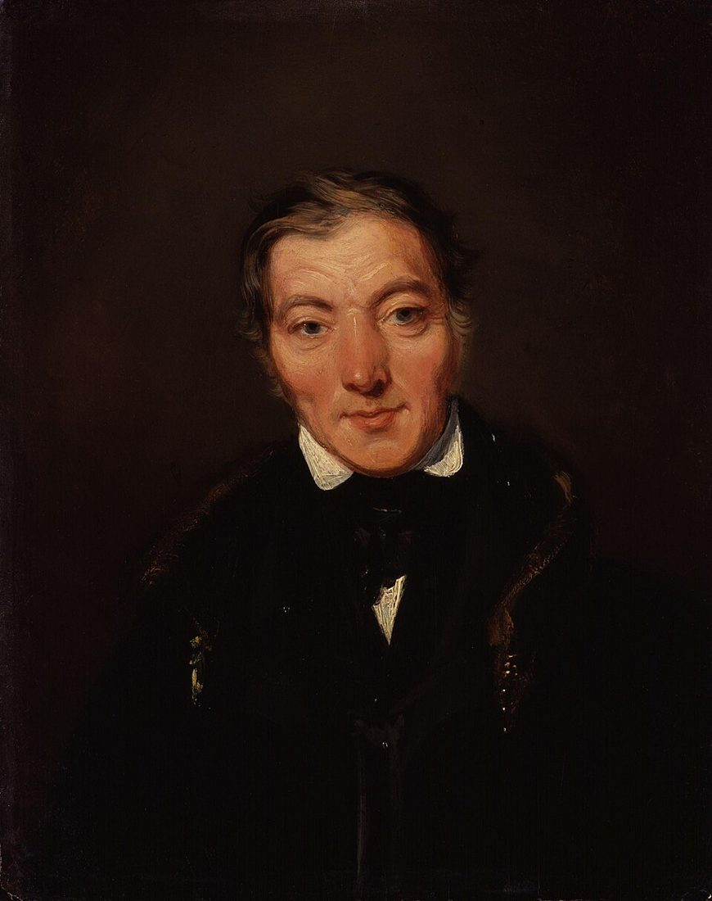
Socialismo científico (2ª metade do séc. XIX)
- Karl Marx (1818–1883), alemão, filósofo e jornalista, exilado em Paris, Bruxelas e Londres. Parceria com Friedrich Engels, filho de industrial.
- "Científico" porque analisa a sociedade como ela é, com história e economia, em vez de imaginar sociedades ideais.
- Manifesto do Partido Comunista (1848): a história é a luta de classes; a burguesia explora o proletariado; os trabalhadores devem tomar o poder e abolir a propriedade privada. "Trabalhadores do mundo, uni-vos!"
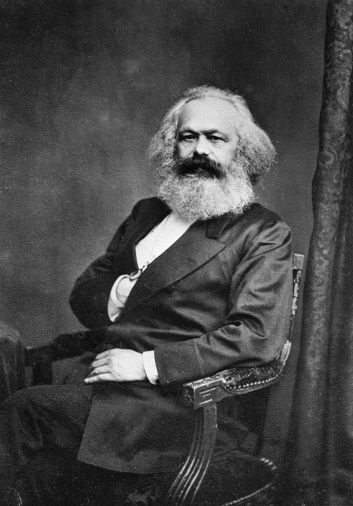
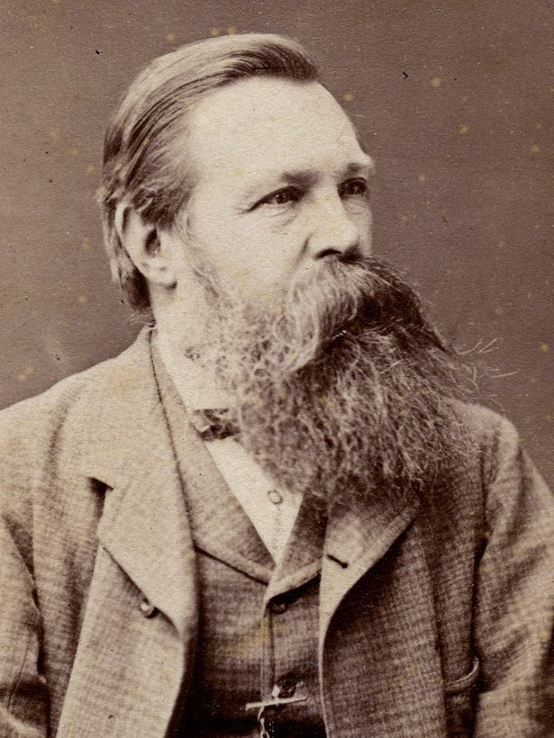
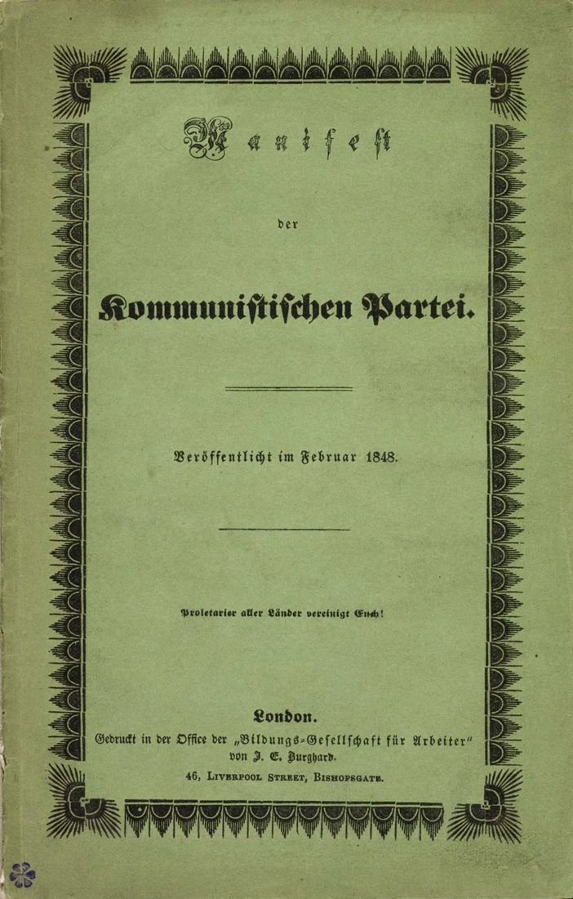
Mais-valia (exemplo dos slides)
| Item | Valor |
|---|---|
| Matéria-prima, energia, máquinas | $ 3.000 |
| Salários (10 operários × $ 500) | $ 5.000 |
| Venda das roupas | $ 30.000 |
| Diferença apropriada pelo dono | $ 22.000 |
- Visão liberal: o lucro é legítimo, porque o dono tem a propriedade, assume riscos, investe e reinveste, e é recompensado pelo mérito da iniciativa.
- Visão marxista: a matéria-prima só transfere seu valor; quem cria valor novo ($ 27.000) é o trabalho. Os operários recebem $ 5.000; os $ 22.000 são mais-valia, trabalho não pago.
- Proposta socialista: com os meios de produção coletivos, os $ 27.000 seriam divididos: $ 2.700 por operário.
Capitalismo → socialismo → comunismo
Cronologia
- Origem: resposta à industrialização e à centralização do poder, entre operários e intelectuais que rejeitavam o Estado burguês e também o autoritarismo de projetos socialistas. Nomes: Proudhon e Bakunin.
- Princípios: liberdade, igualdade e autogestão sem Estado; rejeita toda dominação (estatal, religiosa, econômica); sociedade de associações livres e cooperativas. A liberdade plena só existe se for coletiva.
- Métodos: recusa a via parlamentar e aposta na ação direta: greves, boicotes, sabotagens, propaganda e educação popular. A transformação vem "de baixo para cima".
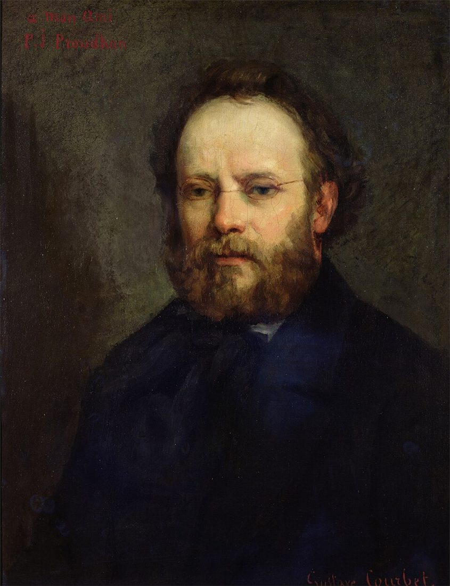
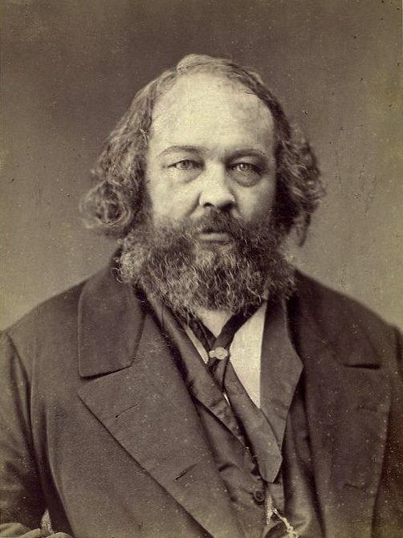
| Liberalismo | Socialismo (Marx) | Anarquismo | |
|---|---|---|---|
| Estado | Mínimo, garante a propriedade | Estado operário de transição | Abolição imediata |
| Propriedade | Privada, direito natural | Coletiva (meios de produção) | Coletiva, autogerida |
| Caminho | Leis, Constituição, mercado | Revolução do proletariado | Ação direta, sem partidos |
Cap. 3 A Unificação da Itália
As revoluções de 1830 e 1848 espalharam o liberalismo e também a consciência nacionalista, com identidades, símbolos e projetos de nação.
- Fragmentação: por séculos a península esteve dividida em pequenos Estados, sem unidade política duradoura.
- Domínio austríaco: depois de Viena (1815), a Áustria controla diretamente Lombardia e Vêneto e influencia os ducados, bloqueando a unificação.
- Mapa de 1815: Reino de Piemonte-Sardenha, Lombardo-Vêneto (Áustria), ducados de Parma, Modena e Toscana, Estados Pontifícios e Reino das Duas Sicílias.
Os projetos nacionalistas
- Carbonários (início do séc. XIX): sociedade secreta por uma república unificada, duramente reprimida.
- Giuseppe Mazzini funda a Jovem Itália (1831): Itália republicana e democrática, por levantes populares. A República Romana (1849) fracassa pela repressão militar e pela falta de apoio das elites.
- Cultura: a ópera Nabucco (Verdi, 1842) e o coro dos escravos hebreus, "Va, pensiero", viram hino patriótico contra os austríacos.
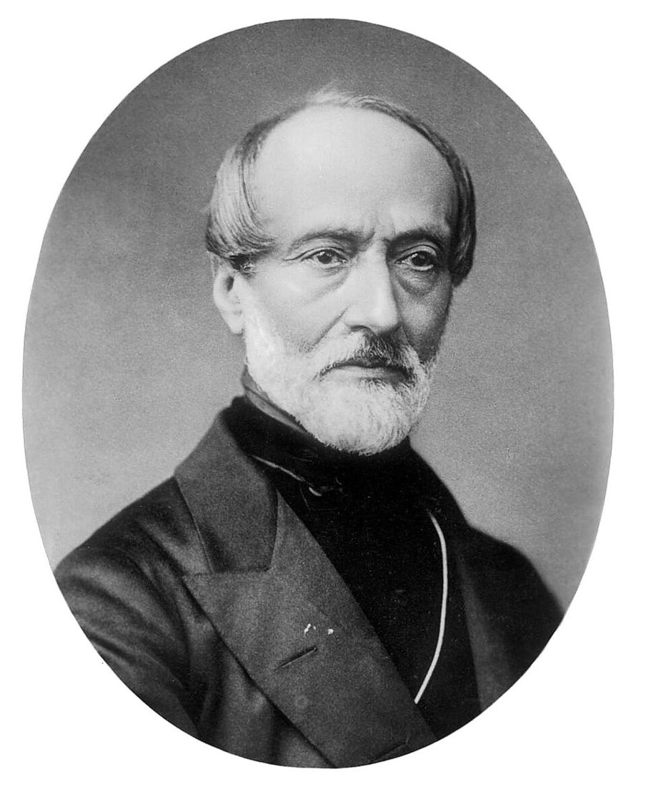
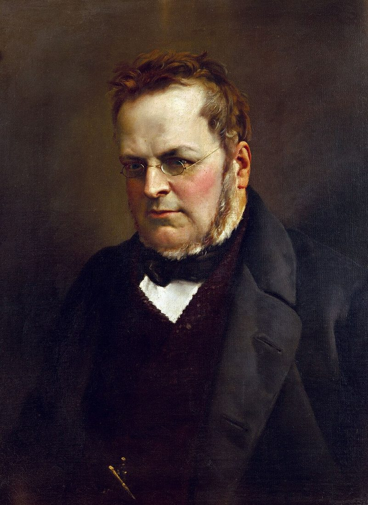
Depois de 1848, as elites burguesas preferem uma solução menos radical: unificar sob o Reino de Piemonte-Sardenha (rei Vítor Emanuel II). O Conde de Cavour, aristocrata piemontês, moderniza a economia, as ferrovias, a indústria e o exército.
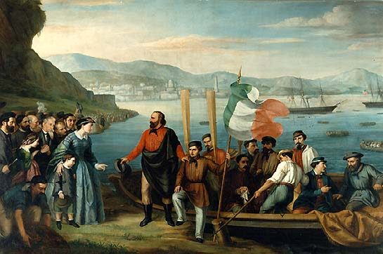
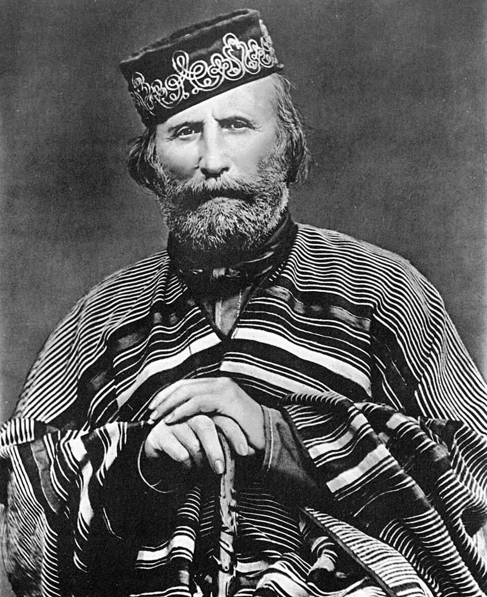
- País dividido e ressentido: o Norte industrializado se impõe ao Sul rural, gerando pobreza, banditismo social e resistência violenta.
- Imigração em massa: milhões fogem da miséria para a América, principalmente Brasil, Argentina e Estados Unidos.
- Questão Romana: o Papa Pio IX não reconhece o Reino da Itália e se declara "prisioneiro no Vaticano". Só em 1929, com o Tratado de Latrão, Mussolini reconhece o Vaticano como Estado independente.
Cap. 4 A Unificação da Alemanha
- Confederação Germânica (1815–1866): união política fraca e fragmentada de 39 Estados, dominada pela rivalidade entre Áustria e Prússia.
- Zollverein (1834): união alfandegária liderada pela Prússia, sem a Áustria. Integra o comércio interno e dá à Prússia a liderança econômica.
- 1848: o Parlamento de Frankfurt tenta criar um Estado alemão democrático. Sem apoio das elites, fracassa e é reprimido pelos conservadores.
Otto von Bismarck (1815–1898), primeiro-ministro prussiano a partir de 1862: articulador pragmático da unificação, adepto da Realpolitik (força militar e diplomacia fria, sem idealismos liberais ou republicanos). Aliado dos junkers, a aristocracia rural prussiana, que queria uma unificação forte, autoritária e sem participação popular.
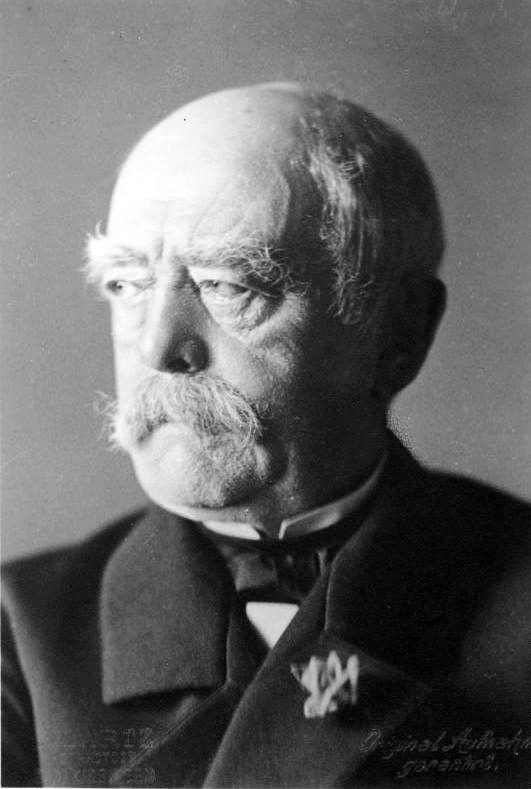
A Guerra Franco-Prussiana
- Napoleão III se opunha à unificação completa: ela criaria uma grande potência na fronteira leste da França.
- Em 1869 o trono espanhol fica vago e caberia a um primo do rei Guilherme I, o que Napoleão III vetou.
- Bismarck altera o texto de um despacho de Guilherme I (o Despacho de Ems), que soa como insulto à França: é a causa imediata da guerra. No fundo estava a disputa pela Alsácia e Lorena.
- Como Bismarck previa, a guerra gerou nacionalismo e uniu o sul ao norte.
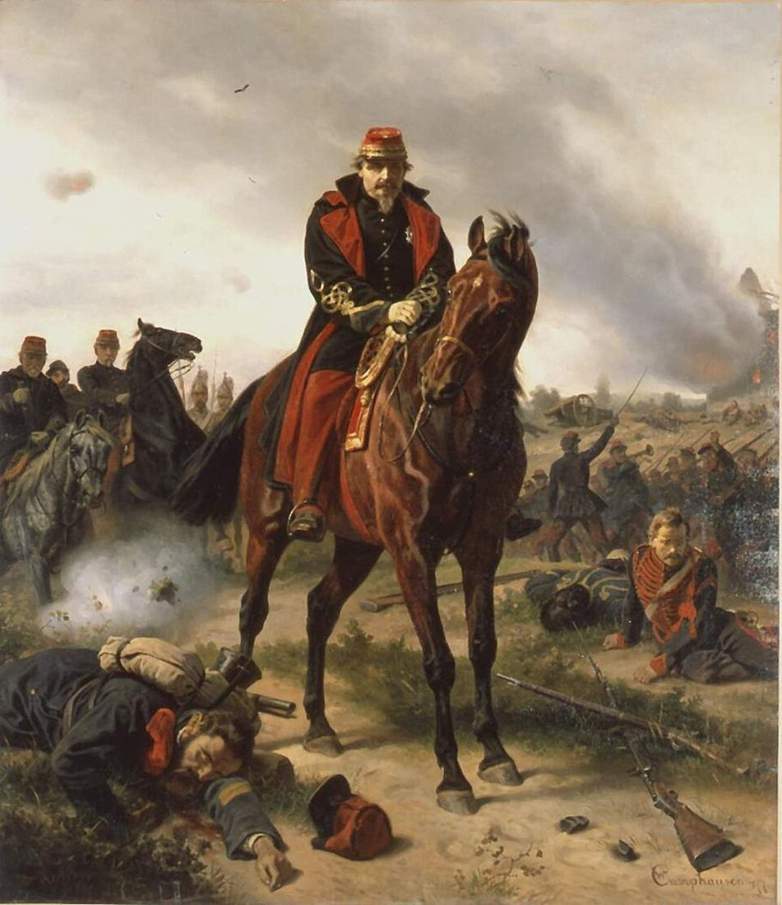
- Império Alemão (II Reich): proclamado em 18 de janeiro de 1871 no Salão dos Espelhos de Versalhes, com Guilherme I coroado Kaiser: gesto de humilhação à França (pintura de Anton von Werner, 1885).
- Revanchismo francês: a perda da Alsácia-Lorena desperta o desejo de "revanche" (vingança), alimentando nacionalismo e militarismo: uma das raízes da Primeira Guerra.
- Fim do Segundo Império Francês: a captura de Napoleão III em Sedan leva à sua deposição. Em 1º de março de 1871 o exército prussiano desfila sob o Arco do Triunfo, em Paris.
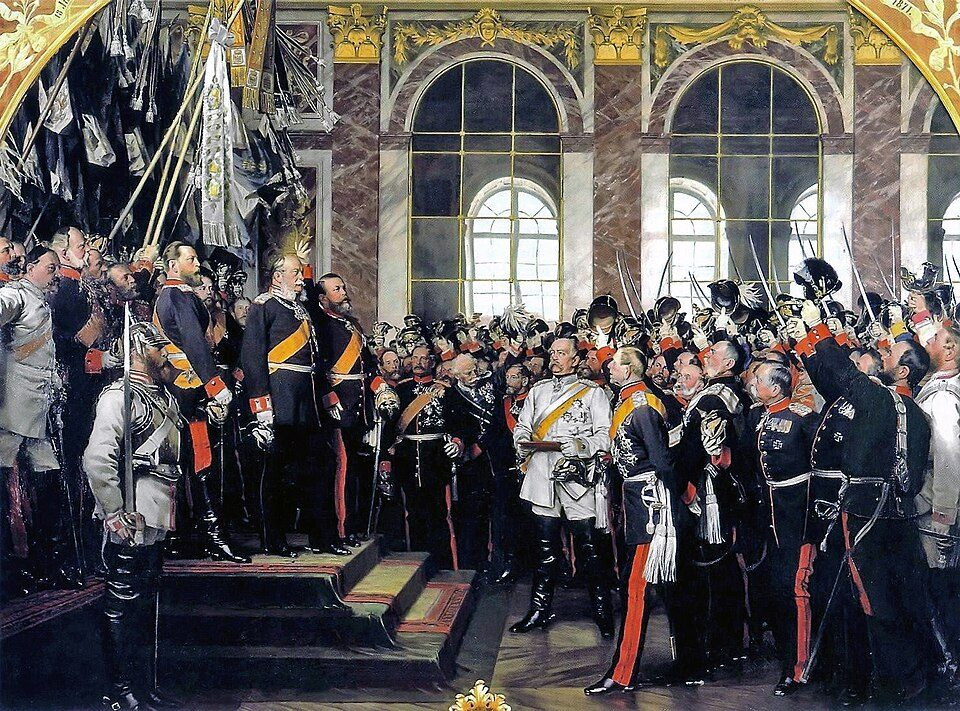
Cap. 5 A Comuna de Paris
Após a derrota na Guerra Franco-Prussiana, Paris é sitiada e depois ocupada. O novo governo da Terceira República, instalado em Versalhes (chefiado por Adolphe Thiers), é visto como traidor. Trabalhadores, republicanos radicais, socialistas e a Guarda Nacional tomam o poder em Paris e criam um governo autogerido, popular e anticlerical.
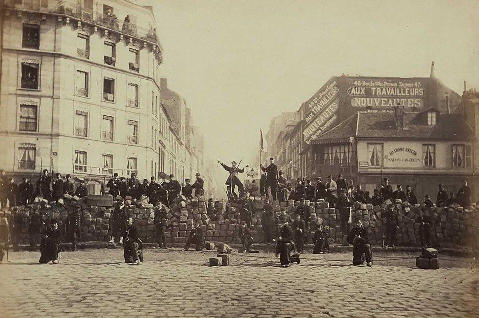
Medidas
- Separação entre Igreja e Estado; educação gratuita e laica.
- Abolição do trabalho noturno (nas padarias) e autogestão das fábricas abandonadas.
- Fim da censura; salários justos para funcionários públicos.
- Igualdade civil entre homens e mulheres; pensões para viúvas e órfãos.
A repressão: Semana Sangrenta (21 a 28 de maio)
O governo de Versalhes reúne tropas, consegue de Bismarck a libertação de prisioneiros de guerra e, com isso, cerca e bombardeia Paris. Milhares morrem em combate ou executados depois; dezenas de milhares são presos e milhares são deportados.
Cap. 6 Os Estados Unidos no Século XIX
- A independência (1783) trouxe o desafio de construir uma nação num território diverso e desigual.
- Contradição: a república pregava liberdade, mas mantinha a escravidão e expulsava os indígenas.
- Dois projetos: Thomas Jefferson (república agrária e descentralizada, base do futuro Partido Democrata) × Alexander Hamilton (Estado forte e industrial, base do futuro Partido Republicano).
- Por trás: campo × cidade, sul escravista × norte industrial, autonomia local × poder federal.
Doutrina Monroe (1823)
Proclamada pelo presidente James Monroe: "a América para os americanos". Três pontos: não criação de novas colônias europeias, não intervenção europeia nos assuntos americanos e não intervenção dos EUA na Europa. Inaugura o nacionalismo expansionista, ligando a política externa à ideia de "proteger a liberdade" no continente.
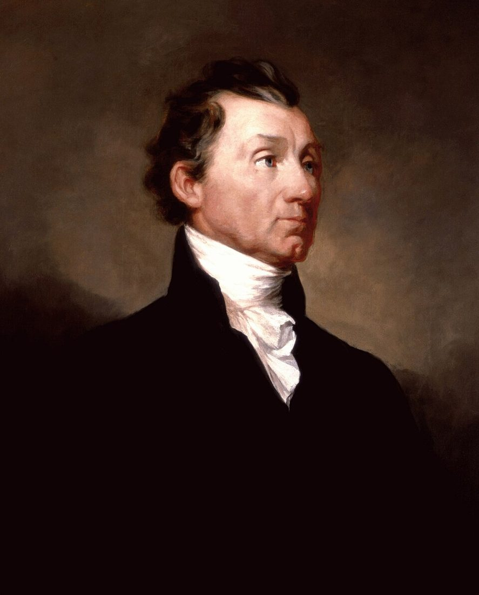
Guerra de 1812: a "Segunda Independência"
Guerra contra o Reino Unido (1812–1815), acusado de restringir o comércio e instigar indígenas contra colonos. O Tratado de Ghent (1814) não mudou fronteiras, mas a guerra consolidou o orgulho nacional.
Motivos: crescimento populacional, busca de terras agrícolas e de rotas para o Pacífico (China e Japão), fraqueza das potências coloniais na América e a ideologia do Destino Manifesto.
| Ano | Território | Como |
|---|---|---|
| 1803 | Luisiana | Comprada da França (Napoleão): dobra o território. Explorada pela expedição de Lewis e Clark (1804–1806), com a guia shoshone Sacagawea. |
| 1819 | Flórida | Comprada da Espanha: controle do sudeste e do Golfo do México. |
| 1845 | Texas | Colonos americanos no Texas mexicano se rebelam; Álamo (1836) vira símbolo; o Texas se declara independente e é anexado. |
| 1846 | Oregon | Acordo com o Reino Unido (fronteira no paralelo 49°). |
| 1848 | Califórnia, Nevada, Utah, Arizona, Novo México | Guerra contra o México (1846–48): Tratado de Guadalupe-Hidalgo, quase metade do território mexicano. Corrida do ouro na Califórnia. |
| 1853 | Faixa de Gadsden | Comprada do México. |
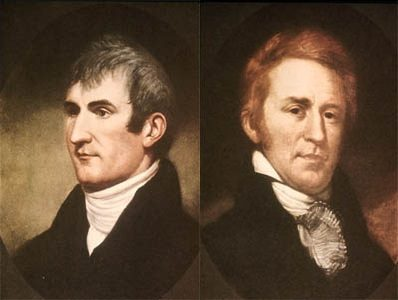
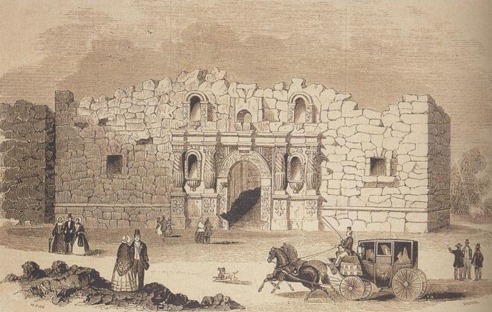
Destino Manifesto
- Crença de que os americanos tinham um direito moral e divino de se expandir do Atlântico ao Pacífico.
- Junta o excepcionalismo (nação eleita por Deus) a valores puritanos: o dever de "iluminar" outros povos com liberdade, fé e progresso.
- Ligado ao nacionalismo romântico: idealiza o pioneiro como herói e trata a conquista como missão civilizatória, mesmo com guerras, expulsões e genocídio.
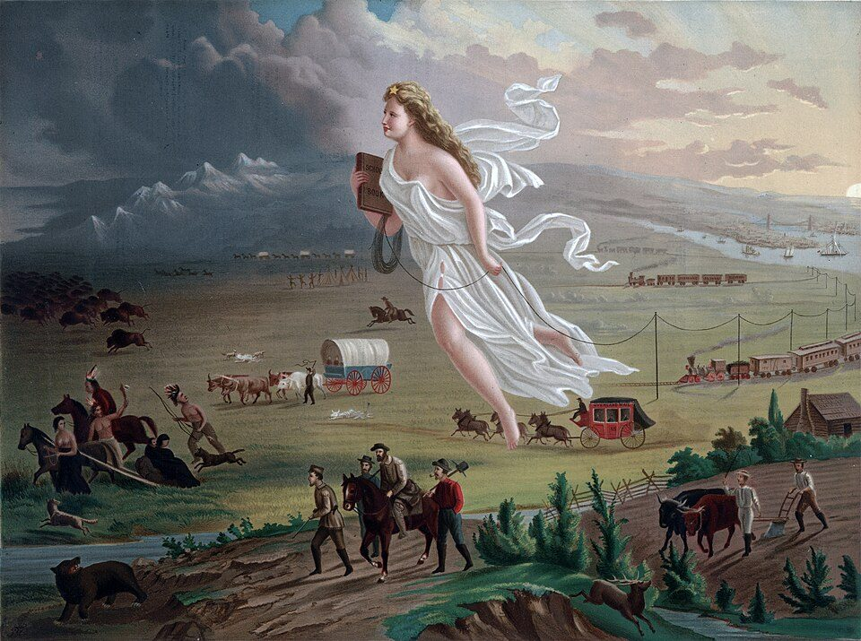
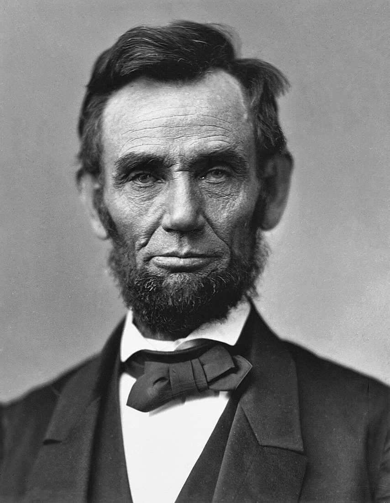
- Cláusula Wilmot (1846): propunha proibir a escravidão nos territórios tomados do México. Rejeitada, mas acirrou o embate entre Norte (industrial, abolicionista) e Sul (agrário, escravista). A expansão reabria a ferida da escravidão.
- 1860: Abraham Lincoln (Partido Republicano) é eleito com apoio do Norte, prometendo conter a expansão da escravidão.
- A Carolina do Sul se separa e é seguida por outros estados: os Estados Confederados da América, capital em Richmond (Virgínia).
- A guerra (1861–1865) usa ferrovias, telégrafo, produção naval e trincheiras. O Norte vence pela superioridade industrial e logística.
- 13ª Emenda (1865) abole a escravidão: cerca de 4 milhões de pessoas libertas (os slides falam em 4,5 milhões), mas sem terra, educação ou integração.
- Lincoln é assassinado em 14 de abril de 1865 por John Wilkes Booth, simpatizante confederado, no Teatro Ford, cinco dias depois da rendição.
- Reconstrução (1865–1877): o Norte ocupa o Sul para reconstruir o país e integrar os ex-escravizados. Leis e instituições de direitos civis são sabotadas pelo racismo e pela resistência sulista.
- Surgem organizações supremacistas como a Ku Klux Klan e os Cavaleiros da Camélia Branca.
- O Acordo de 1877 (eleição de Hayes) retira as tropas federais: fim da Reconstrução e começo da segregação legal (Leis de Jim Crow), que durou até o século XX.
Capitalismo, ferrovias e o Oeste
- O pós-guerra impulsiona o capitalismo industrial e financeiro.
- A malha ferroviária liga as duas costas (ferrovia transcontinental, 1869) e integra o mercado nacional.
- O Homestead Act (1862) dá terras a colonos que as ocupem e cultivem: uma "reforma agrária capitalista".
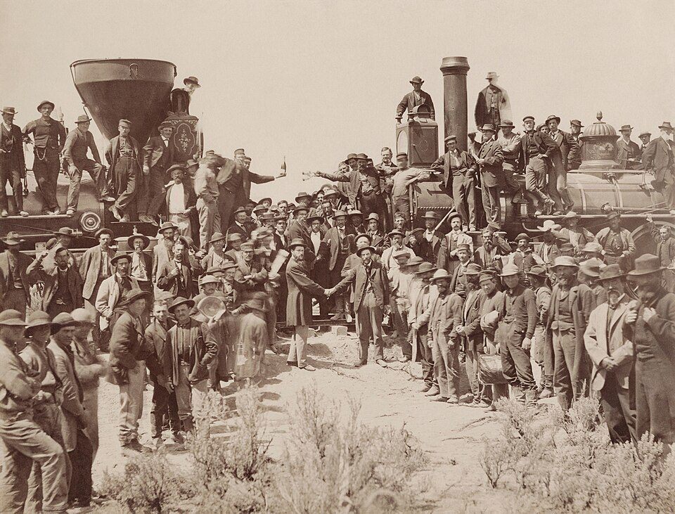
A Doutrina Monroe, somada ao Destino Manifesto, ganha novo sentido no fim do século: os EUA se veem como protetores (e polícia) do continente.
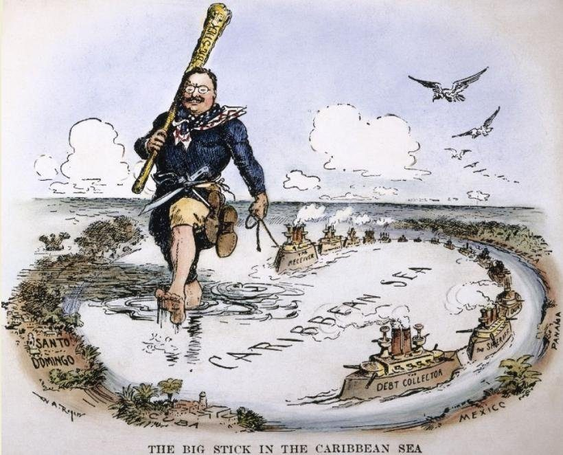
Quiz de Revisão
27 questões no estilo da prova (testes de vestibular) sobre as Revoluções de 1830 e 1848, as ideologias do século XIX, as unificações, a Comuna de Paris e os EUA.
Em julho de 1830, Carlos X publicou ordenações que dissolviam a Câmara, restringiam o voto e censuravam a imprensa. Após três dias de barricadas em Paris, o rei abdicou e fugiu.
1. O desfecho imediato dessa revolução na França foi
Em poucos meses de 1848, levantes atingiram Paris, Viena, Berlim, Milão, Veneza, Budapeste e Praga, e um parlamento se reuniu em Frankfurt.
2. Sobre essa "Primavera dos Povos", é correto afirmar que
Em dezembro de 1848, Luís Bonaparte foi eleito presidente da Segunda República pelo sufrágio universal masculino. Em 1851 deu um golpe e, em 1852, um plebiscito aprovou o Segundo Império.
3. A trajetória francesa entre 1848 e 1852 mostra que
Na tela de Delacroix, uma mulher de seios à mostra ergue a bandeira tricolor e avança sobre uma barricada à frente de burgueses, operários e estudantes.
4. A obra "A Liberdade guiando o povo" representa
Na Monarquia de Julho (1830-1848), só votava quem pagava impostos elevados: cerca de 1% da população francesa.
5. Essa situação revela que o liberalismo do século XIX
Em 1846, o primeiro-ministro britânico Robert Peel revogou as Corn Laws, tarifas que encareciam os grãos importados.
6. A revogação atendia sobretudo aos interesses
Associe os movimentos operários britânicos: I. Ludismo · II. Cartismo · III. Trade Unions. ( ) "Carta do Povo", com sufrágio universal masculino · ( ) destruição de máquinas, vistas como causa do desemprego · ( ) associações permanentes que negociam salários, fazem greves e dão ajuda mútua.
7. A sequência correta, de cima para baixo, é
Saint-Simon imaginou uma sociedade governada por sábios; Fourier, os falanstérios; Owen criou a comunidade-modelo de New Lanark. Marx e Engels chamaram essas propostas de "utópicas".
8. Diferentemente desses autores, Marx e Engels
Uma fábrica gasta $ 3.000 em matéria-prima e paga $ 500 a cada um de seus 10 operários. As roupas produzidas são vendidas por $ 30.000.
9. Segundo a teoria de Marx, a mais-valia nesse exemplo é de
Proudhon e Bakunin, assim como Marx, criticavam o capitalismo, mas entraram em choque com os marxistas na Primeira Internacional.
10. A principal divergência entre anarquistas e marxistas era que os anarquistas
Em 1852, após o golpe de Luís Napoleão, um plebiscito aprovou o Segundo Império com mais de 90% dos votos, embalado por propaganda que exaltava a glória de Napoleão I e tratava obedecer ao imperador como servir à pátria.
11. O episódio exemplifica
Em 1864, operários ingleses e franceses que apoiavam os poloneses reprimidos pela Rússia fundaram, em Londres, a Associação Internacional dos Trabalhadores.
12. Sobre essa Primeira Internacional, é correto afirmar que
Para o chanceler austríaco Metternich, "a Itália é uma mera expressão geográfica".
13. A frase se refere ao fato de que, após o Congresso de Viena,
Giuseppe Mazzini, fundador da Jovem Itália (1831), e o Conde de Cavour, ministro do Piemonte, queriam unificar a Itália.
14. Os projetos dos dois se diferenciavam porque
Em 1860, após conquistar a Sicília e o sul com seus "camisas vermelhas", o republicano Giuseppe Garibaldi encontrou o rei Vítor Emanuel II em Teano.
15. O encontro de Teano é significativo porque Garibaldi
Considere os acontecimentos: I. anexação de Roma · II. proclamação do Reino da Itália · III. incorporação do Vêneto · IV. conquista da Lombardia com apoio francês.
16. A ordem cronológica correta é
Depois de 1870, o Papa Pio IX se declarou "prisioneiro no Vaticano" e não reconheceu o Reino da Itália; ao mesmo tempo, milhões de italianos do Sul emigraram para a América.
17. Essas duas situações se ligam, respectivamente,
Em 1834, a Prússia organizou o Zollverein, do qual a Áustria ficou de fora.
18. O Zollverein foi importante para a unificação alemã porque
Bismarck, adepto da Realpolitik, conduziu a unificação por meio de três guerras.
19. A sequência correta dessas guerras e dos adversários da Prússia é
Em 18 de janeiro de 1871, Guilherme I foi coroado Kaiser no Salão dos Espelhos do Palácio de Versalhes.
20. Entre as consequências dessa vitória alemã está
Entre março e maio de 1871, Paris foi governada pela Comuna, formada por trabalhadores, socialistas, anarquistas e membros da Guarda Nacional.
21. Foi uma medida adotada pela Comuna de Paris:
O governo da Terceira República, instalado em Versalhes, retomou Paris em maio de 1871, com prisioneiros de guerra libertados por Bismarck. Milhares de communards foram mortos, presos ou deportados.
22. A Comuna se tornou uma referência histórica porque
Na tela "American Progress" (John Gast, 1872), uma figura feminina flutua para o Oeste levando um livro e o fio do telégrafo, seguida por ferrovias e colonos, enquanto indígenas e bisões fogem para a sombra.
23. A pintura é uma alegoria
Considere: I. Compra da Luisiana · II. Guerra contra o México · III. Compra da Flórida · IV. Anexação do Texas.
24. Associando cada aquisição a quem cedeu o território, temos, respectivamente:
A Cláusula Wilmot (1846) propunha proibir a escravidão nos territórios conquistados do México. Em 1860, Abraham Lincoln foi eleito prometendo conter a expansão da escravidão, e a Carolina do Sul deixou a União.
25. Esses fatos indicam que a Guerra de Secessão
Após a Guerra Civil, a 13ª Emenda aboliu a escravidão. Na Reconstrução (1865-1877), o Norte ocupou o Sul; com a retirada das tropas, em 1877, vieram as leis de "Jim Crow".
26. Sobre o período pós-abolição nos EUA, é correto afirmar que
Em 1823: "os continentes americanos não devem ser considerados sujeitos a futuras colonizações por qualquer potência europeia" (James Monroe). Em 1904, Theodore Roosevelt afirmou o direito dos EUA de intervir em países latino-americanos instáveis ou endividados.